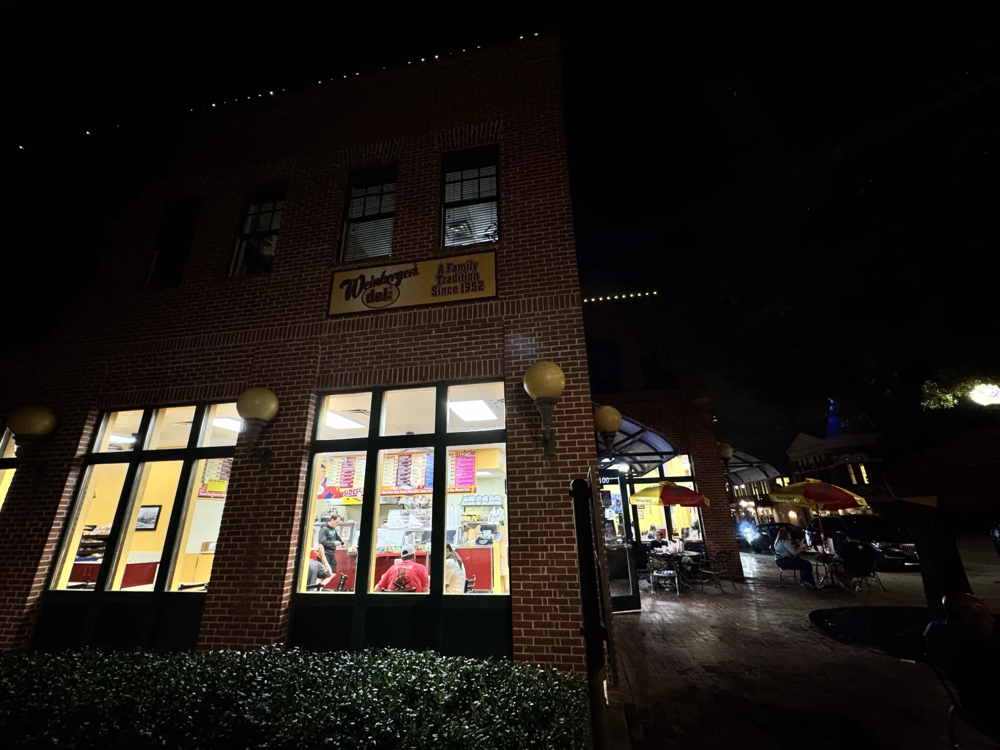

WEINBERGER’S DELI / GRAPEVINE
COME BY
THE DELI.
601 S Main Street
Grapevine, Texas 76051
Dine in, pick up, or arrange delivery through the current ordering site.

01 / HOURS & PICKUP
BEFORE YOU HEAD OVER.
Check today’s opening hours and pickup availability with the deli, especially around holidays.
Have an order already in progress? Follow the pickup information in your confirmation.
02 / GROUP ORDERS
MORE THAN ONE LUNCH.
For a meeting, gathering or a larger order, start with the deli’s group-order and catering options.
- Have the date, time and number of people ready.
- Ask about pickup or delivery, lead time and any dietary needs.
- Confirm the menu, price and timing with the deli before making plans.
A FEW PRACTICAL DETAILS
GOOD TO KNOW.
Can I customize a sandwich?
Open any sandwich to choose bread, preparation and extras, or start with Build Your Own. Prices and availability that need the deli’s confirmation are identified before an order can be charged.
Build your own sandwich ↗What if I have a food allergy?
Speak with the deli before ordering. Menu descriptions and ingredient filters do not establish that a sandwich is free of an allergen or cross-contact.
Call the deli ↗Where do I use my rewards or gift card?
Use the existing Weinberger’s ordering account for current rewards. Gift cards and existing orders stay with their current service.
Existing rewards account ↗Gift cards ↗Can I read or print the full menu?
Yes. The readable menu includes item names, descriptions and listed starting prices, grouped by category. It also works without JavaScript.
Open the readable menu ↗ASK THE COUNTER
WE’RE AT
MAIN STREET.
601 S Main Street
Grapevine, Texas 76051